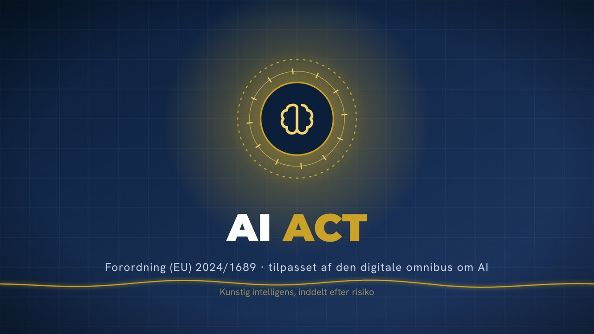

ARG
ARGARGOS › Reglerne på 4 minutter › AI-forordningen
AI-forordningen på 4 minutter: Danmark gik forrest
AI-forordningen, tilpasset af den digitale omnibus, inddeler kunstig intelligens efter risiko. Klassificeringen afgør alt. Efter formål, ikke teknologi. Danmark gik forrest.

- 0:00Usynlige beslutninger
- 0:11Bøderne
- 0:27I Danmark
- 0:51AI Act
- 1:00Fire niveauer
- 1:19Høj risiko
- 1:38Datoer
- 1:58Europa
- 2:13Myndigheder
- 2:26Hvad gør man
Det vigtigste
- 35 mio. € eller 7 % af den globale omsætning
- 2.8.2026 generel anvendelse og gennemsigtighed
- 2.12.2026 slut på overgangsperioden for mærkning
- 2.12.2027 høj risiko i bilag III
- 2.8.2028 AI i regulerede produkter (bilag I)
- Lov nr. 467 Fra maj 2025, den første i EU
- Digitaliserings- styrelsen Markedsovervågning
- Datatilsynet Person- oplysninger
Transskription
Den fulde speaktekst
0:00 · Usynlige beslutninger
En algoritme sorterer dit CV fra. En anden afgør dit lån. En tredje genkender dit ansigt i lufthavnen. Ingen har forklaret dig det. Fra nu af skal nogen gøre det.
0:11 · Bøderne
Den europæiske AI-forordning giver bøder op til femogtredive millioner euro, eller syv procent af den globale omsætning. Siden august 2026: oplys om AI og uddan medarbejderne. Og Danmark var det første land med en national lov.
0:27 · I Danmark
Danmark gik forrest. Lov nummer 467 af maj 2025 var den første nationale lov i EU. Digitaliseringsstyrelsen er markedsovervågning og kontaktpunkt. Datatilsynet fører tilsyn med personoplysninger. Medarbejderne skal informeres om AI på arbejdspladsen. Og den, der ændrer et systems formål, bliver selv udbyder.
0:51 · AI Act
AI-forordningen, tilpasset af den digitale omnibus, inddeler kunstig intelligens efter risiko. Klassificeringen afgør alt. Efter formål, ikke teknologi.
1:00 · Fire niveauer
Fire niveauer. Uacceptabel: forbudt, som social pointgivning. Høj risiko: job, kredit, uddannelse, biometri. Gennemsigtighed: oplys om AI og mærk syntetisk indhold. Og minimal risiko, det meste brug i virksomheder. For alle gælder kravet om AI-kompetencer.
1:19 · Høj risiko
Høj risiko kræver et komplet styringssystem. Risikostyring gennem hele livscyklussen. Repræsentative data, uden skævheder. Teknisk dokumentation og automatisk logning. Og menneskeligt tilsyn, robusthed og cybersikkerhed. Artikel 9 til 15 i forordningen.
1:38 · Datoer
Datoerne, efter omnibussen. 2. august 2026: generel anvendelse og gennemsigtighed. 2. december 2026: slut på overgangsperioden for mærkning. 2. december 2027: høj risiko i bilag tre. Og 2. august 2028: AI i regulerede produkter.
1:58 · Europa
I Europa går hvert land i sit eget tempo. Tyskland har sin lov i kraft. Italien også. Danmark var først. Nederlandene har et udkast i høring. Frankrig debatterer i parlamentet. Og Spanien, Portugal og Belgien venter stadig.
2:13 · Myndigheder
I Danmark er Digitaliseringsstyrelsen den centrale myndighed for AI. Datatilsynet og sektormyndighederne fører tilsyn på deres områder. Loven fastsætter sanktionerne. Og danske virksomheder har allerede en myndighed at spørge.
2:26 · Hvad gør man
Hvad gør man nu. Kortlæg og klassificér AI-systemerne, sørg for gennemsigtighed, uddan og informér medarbejderne. ARGOS beviser det: logge, menneskeligt tilsyn og sporbare afgørelser, med AI der kører lokalt. AI-forordningen: AI foreslår, mennesket beslutter.
Ofte stillede spørgsmål
Hvad er AI-forordningen?
AI-forordningen, tilpasset af den digitale omnibus, inddeler kunstig intelligens efter risiko. Klassificeringen afgør alt. Efter formål, ikke teknologi. Den europæiske AI-forordning giver bøder op til femogtredive millioner euro, eller syv procent af den globale omsætning. Siden august 2026: oplys om AI og uddan medarbejderne. Og Danmark var det første land med en national lov.
Hvad kræver AI-forordningen?
Fire niveauer. Uacceptabel: forbudt, som social pointgivning. Høj risiko: job, kredit, uddannelse, biometri. Gennemsigtighed: oplys om AI og mærk syntetisk indhold. Og minimal risiko, det meste brug i virksomheder. For alle gælder kravet om AI-kompetencer.
Hvilke datoer er vigtige?
Datoerne, efter omnibussen. 2. august 2026: generel anvendelse og gennemsigtighed. 2. december 2026: slut på overgangsperioden for mærkning. 2. december 2027: høj risiko i bilag tre. Og 2. august 2028: AI i regulerede produkter.
Hvad gælder i Danmark?
Danmark gik forrest. Lov nummer 467 af maj 2025 var den første nationale lov i EU. Digitaliseringsstyrelsen er markedsovervågning og kontaktpunkt. Datatilsynet fører tilsyn med personoplysninger. Medarbejderne skal informeres om AI på arbejdspladsen. Og den, der ændrer et systems formål, bliver selv udbyder. I Danmark er Digitaliseringsstyrelsen den centrale myndighed for AI. Datatilsynet og sektormyndighederne fører tilsyn på deres områder. Loven fastsætter sanktionerne. Og danske virksomheder har allerede en myndighed at spørge.
Hvad bør en virksomhed gøre nu?
Hvad gør man nu. Kortlæg og klassificér AI-systemerne, sørg for gennemsigtighed, uddan og informér medarbejderne. ARGOS beviser det: logge, menneskeligt tilsyn og sporbare afgørelser, med AI der kører lokalt. AI-forordningen: AI foreslår, mennesket beslutter.
Officielle kilder
- Forordning (EU) 2024/1689 (AI Act) (EUR-Lex)
- Forordning (EU) 2026/1744 (EUR-Lex)
- Software in a Box’ regulatoriske faktaark
Se også
 NIS2
NIS2NIS2 på 4 minutter: Danmark: NIS2 er allerede lov
 Data Act og DGA
Data Act og DGAData Act og DGA på 4 minutter: Danmark: tilsyn hos myndigheden, bøder ved domstolene
 ISO for staten
ISO for statenISO for staten på 4 minutter: Bevis er ikke en formular
Speak og musik er genereret med kunstig intelligens (art. 50 i AI-forordningen). Generel information, ikke juridisk rådgivning; status november 2026, ifølge Software in a Box’ regulatoriske faktaark. Videoklip under licens fra Envato.
Sådan indlejrer du præsentationen på en anden hjemmeside: <iframe src="https://argos.softwareinabox.eu/da/regler/ai-forordningen/presentacion/?embed=1" width="960" height="540" allow="autoplay; fullscreen" title="AI-forordningen på 4 minutter: Danmark gik forrest"></iframe> med et link til denne side.
Findes også på: EspañolDeutschFrançaisFrançais (Belgique)ItalianoNederlandsNederlands (België)Português